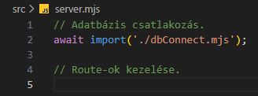
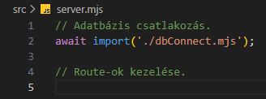
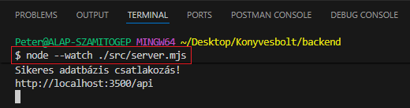
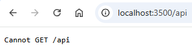

Szerver alapok - server.mjs
Szerver alapok - server.mjs
Ebben a részben létrehozzuk az src mappában a server.mjs állományt, amelyben "összeállítjuk" a webszervert.
-
Hozzuk létre az
srcmappában aserver.mjsállományt. és és
 
-
await import('./dbConnect.mjs');- importáljuk be adbConnect.mjs-ben létrehozottpromise-t.
-
-
A webszerver futtatásához adjuk ki a következő utasítást a
GitBashfelületen: és
node --watch ./src/server.mjs -
Az eddigi munka letölthető formátumban:
backend_01.rar
Letöltés és kicsomagolás után aGitBashfelületen abackendmappában adjuk ki a következő utasítást:
npm install -
A webszerver futtatásához adjuk ki a következő utasítást a
GitBashfelületen:
node --watch ./src/server.mjs